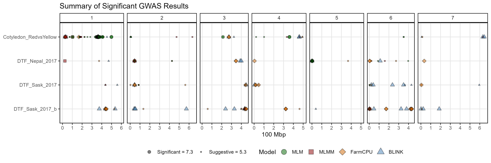
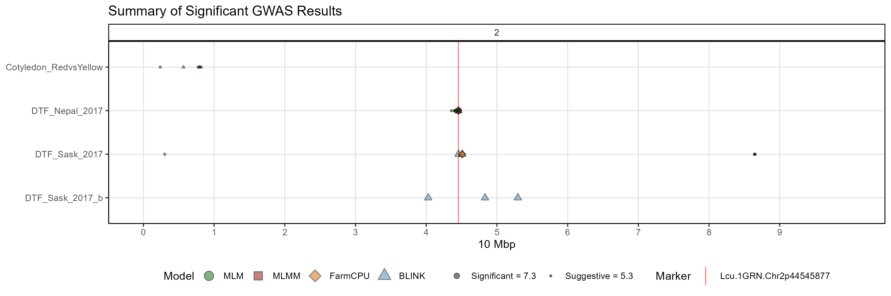
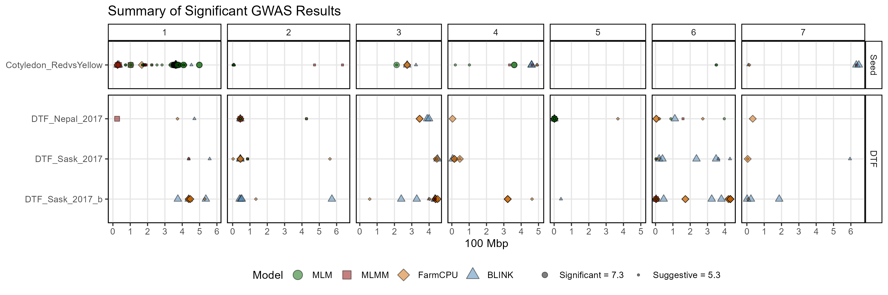

The function gg_GWAS_Summary() creates summary plots
showing significant association from your GWAS analyses.
Prepare GWAS results
Before using the function gg_GWAS_Summary(), in order to
reduce the run time of the function, the GWAS results files need to be
ordered based on p.values. this can be done with the function
order_GWAS_Results() and confirmed with
is_Ordered()
order_GWAS_Results(folder = "GWAS_Results/")
is_Ordered(folder = "GWAS_Results/")Summarise all results
Specifying a folder is all that is needed to create
summary GWAS plots.
# Plot
mp <- gg_GWAS_Summary(
# Specify a folder with GWAS results
folder = "GWAS_Results/" )
# Save
ggsave("figures/gg_GWAS_Summary_01.png",
mp, width = 12, height = 4 )
Plotly
Make it an interactive plot with the following code
gg_plotly(mp, filename = "figures/gg_GWAS_Summary_01.html")https://derekmichaelwright.github.io/gwaspr/vignettes/figures/gg_GWAS_Summary_01.html
All options
folder <- "GWAS_Results/"
# Plot
mp <- gg_GWAS_Summary(
folder = folder,
traits = list_Traits(folder),
groups = NULL,
threshold = round(-log10(0.00000005),1),
sug.threshold = round(-log10(0.000005),1),
chr = NULL, pos1 = NULL, pos2 = NULL,
models = c("MLM", "MLMM", "FarmCPU", "BLINK", "CMLM", "SUPER"),
model.colors = gwaspr_Colors,
shapes = 21:25,
hlines = NULL,
vlines = NULL,
vline.colors = rep("red",length(vlines)),
vline.types = rep(1, length(vlines)),
vline.legend = T,
threshold.legend = T,
title = "Summary of Significant GWAS Results",
caption = NULL,
rowread = 2000,
legend.position = "bottom",
legend.rows = 1,
chr.unit = "100 Mbp",
plotHBPvalues = F,
skyline = "NYC" )
# Save
ggsave("figures/gg_GWAS_Summary_02.png",
mp, width = 12, height = 4 )
Zoomed-in plot
# Plot
mp <- gg_GWAS_Summary(
# Specify a folder with GWAS results
folder = "GWAS_Results/",
# Set vertical lines
vlines = "Lcu.1GRN.Chr2p44545877",
# Choose area to zoom-in on
chr = 2, pos1 = 0, pos2 = 100000000, chr.unit = "10 Mbp")
# Save
ggsave("figures/gg_GWAS_Summary_03.png",
mp, width = 12, height = 4 )
Facet grouping
The option groups can be used to facet the traits. The
requirement is that the list of for groups must be equal in
length with traits
# Prep data
traits <- c("Cotyledon_RedvsYellow","DTF_Nepal_2017", "DTF_Sask_2017", "DTF_Sask_2017_b")
groups <- c("Seed", "DTF", "DTF", "DTF")
# Plot
mp <- gg_GWAS_Summary(
# Specify a folder with GWAS results
folder = "GWAS_Results/",
# Select traits to plot
traits <- traits,
# Set groups for facetting
groups = groups )
# Save
ggsave("figures/gg_GWAS_Summary_04.png",
mp, width = 12, height = 4 )